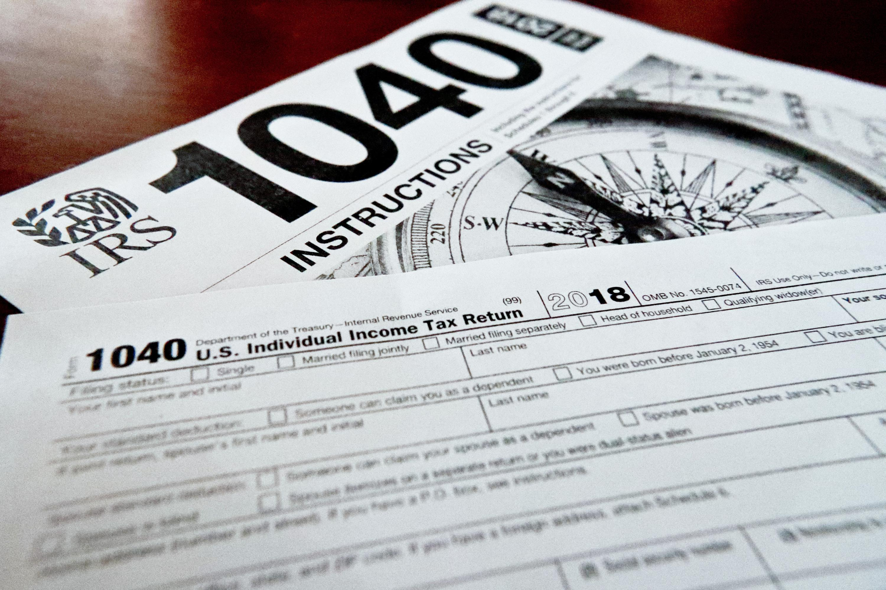
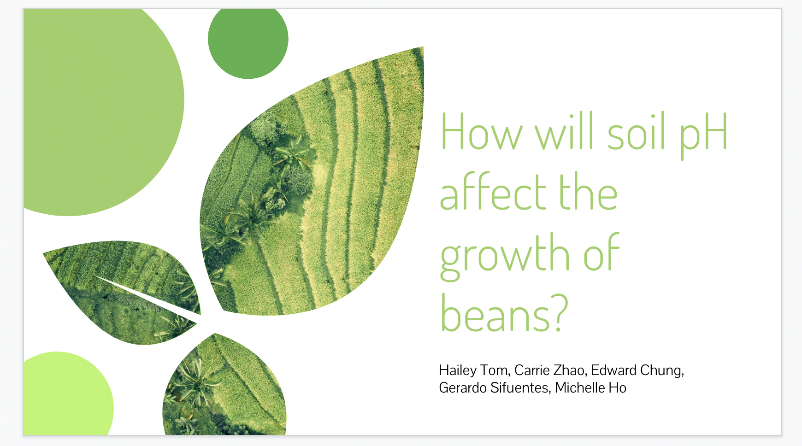
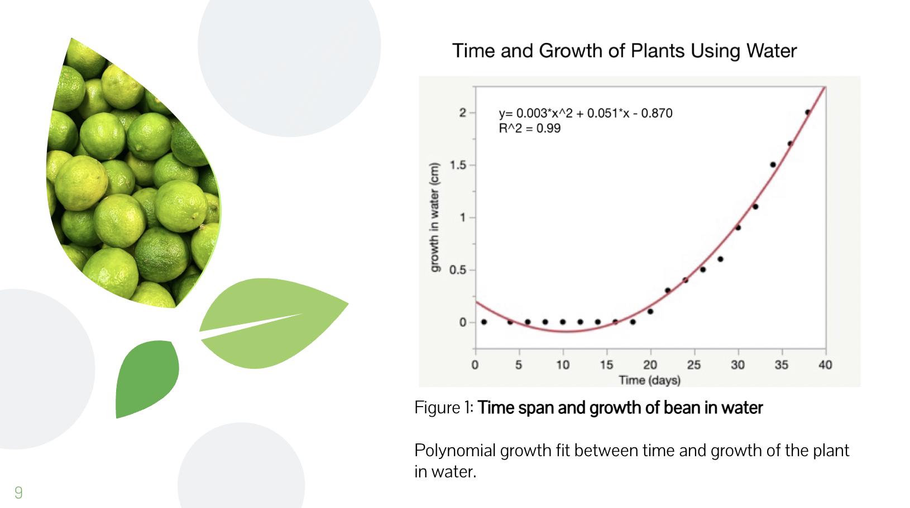
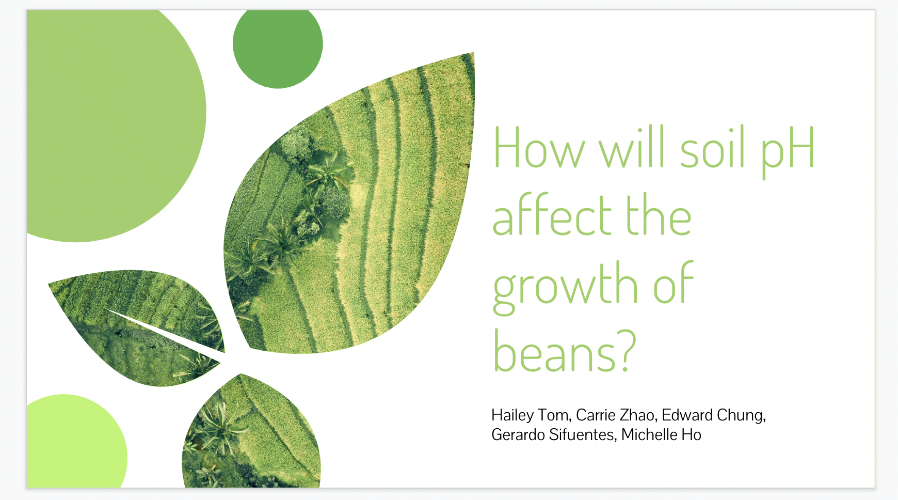
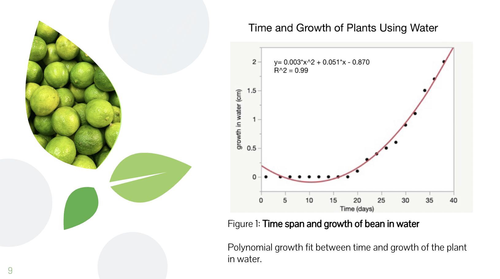

Carrie Zhao
Hello! My name is Carrie Zhao and I am currently a fourth year CNAS student majoring in Biology. I will be finishing my degree by Spring 2023 and graduate in June. I will be taking a gap year and I hope to get into pharmacy school and work towards my goal to become a pharmacist.
I am also an active employee at CVS Pharmacy working as a pharmacy technician. As a pharmacy technician in a fast paced environment, I manage inventory for over 500+ behind and over the counter medication. I carefully measure prescriptions and fill medications for the patients. I also manage phone calls across multiple lines, taking and refilling prescriptions, answering questions, and resolving patient’s concerns.
Throughout my four years in college, I have participated in many biological laboratory projects. The main focus on the lab projects were mostly plants (beans) and I worked with a group of students to develop experiments to see what factors have an effect on these plants. My groupmates and I tested temperature and pH levels on the plants to see if there was any influence on the height/growth. We looked for any significance on environmental limitations and determine the necessary resources for plants to thrive. Analysis of the bean plant growth data was done and also observations were described. I also used the CRISPR/Cas9 to produce mutants in the plant, Arabidopsis Thaliana. I analyzed the gene expression and RNA sequence of the plant. We presented a power point to the professors and twenty other students, leading to an A in the project. I hope to work with other things other than plants in a laboratory setting and increase my knowledge in my lab skills.
Volunteering has been a big part of my life. I love to give back to the community and would volunteer at my local library back home and do tax preparations for low to moderate-income families, disabled, elderly, and those that struggle with the English language. The library has played an important part of my life and I enjoy planning events for the younger children in my community. The annual summer barbeque event is hosted every year at the park and it is a great way to get the community together. I also get to bring out my creative side and come up with fun games and arts and crafts to keep the children entertained. Being in the program, VITA, really opened my eyes becasue it is such a meaningful program to help low-incomed people and those that I have trouble getting their taxes done. It is a proactive environment with tons of oppurtunities to learn. I was able to get certified for free through the IRS. Being in VITA really helped build my data entry skills and gain customer service experience. This program really impacted my community and it is rewarding knowing that I helped someone with their taxes and inform people that they will be getting a refund from the government.
Experience
Pharmacy Technician
• Managed inventory for over 500+ behind and over the counter medications.
• Respected customer’s privacy by maintain strict confidentiality and upholding all local and HIPPA laws.
• Served customers by taking prescriptions, answering questions, billing insurance and handling payment.
Data Coordinator
• Developed and designed an experiment to determine how various pH levels influence seed growth.
• Collaborated with five team members to analyze three months of seed/plant growth data and described observations shown in each seed/plant.
• Accurately measured the length of the seed/plant growth and organized data in one file for easy access.
• Created graphs to compare the data acquired on color intensity and length for the plants.
Secretary
• Provided free basic and advanced income tax return preparations with electronic filing to qualified individuals.
• Ensured the program ran smoothly and managed the supply inventory and scheduled appointments for upcoming visits.
• Exhibited team cohesion in preparing tax returns, helping the team achieve a tax return rejection rate below 10%.
Education
University of California Riverside
Portfolio




 